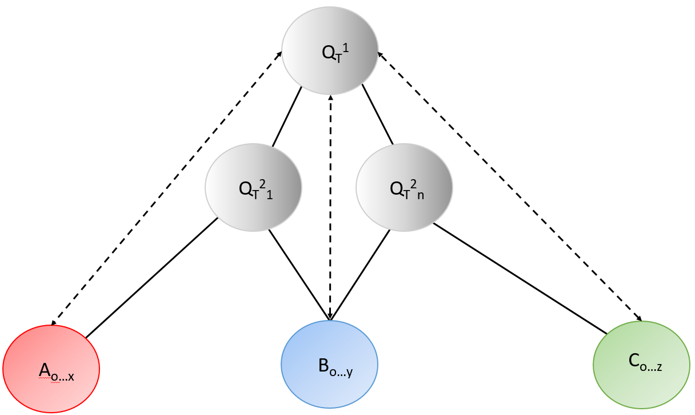

Chemotext
ChemotextIn this search you input an A term and the type of B term you wish to search for. Chemotext will then display a list of the B terms through the same method as Connected Terms search. You then choose which B terms you wish do continue mediating the search through and the type of C term you wish to search for. Chemotext will then process this request and display the list of C terms. This path search allows you to look for new relationships between A and C terms through a mediating B term.
Choose the type of C Terms you want to search for